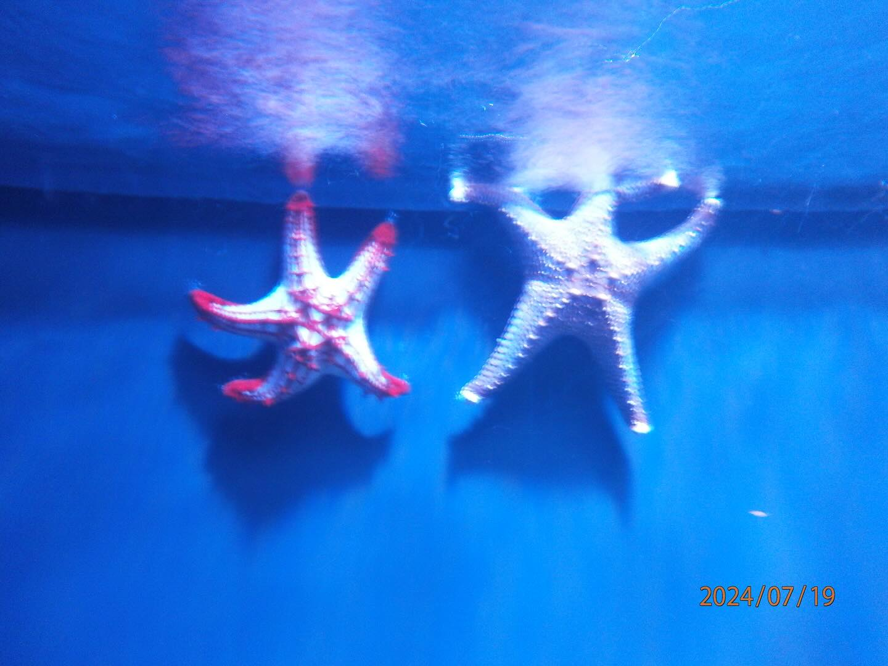
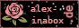
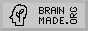

Nothing can ever ruin this
|
pwd:

Head full of rage and hate? Mail me:
|
Welcome to my intersite!Feel free to explore and learn more about me.
Besides working and studying CS in Berlin, I mostly work on my
community game server called "Zeitvertreib" for the game
I also love setting up Linux servers, whether it's VPSs or homelab stuff. Personally, I believe in raw Debian supremacy, but I also enjoy living on the edge with super scary Debian Testing 👻 Computer forensics are super cool, and you should get into it! epoch 2005/04/17 |
|
projects:
CursorConnect @mozilla.org or @github GrowGreen @github RoundReports @github network-interaction @github |
|
| the interweb:   |
are you living in the real world?
U2FsdGVkX19bgKV4smdadvcyJMvF79gusbTUK9d91d8YUkXTOAPbXQt/+ctbgv/Bw0p/lpT6q+ytGn4c746xQA== |